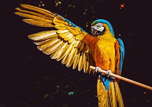
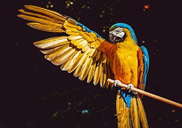

- Common Name: Parrot
- Scientific Name: Psittaciformes
- Type: Birds
- Diet: Omnivore
- Average life span in The Wild: Up to 80 years
- Size: 3.5 inches to 40 inches
- Weight: 2.25 ounces to 3.5 pounds


The parrots are a broad order of more than 350 birds. Macaws, Amazons, lorikeets, lovebirds, cockatoos and many others are all considered parrots.
Though there is great diversity among these birds, there are similarities as well. All parrots have curved beaks and all are zygodactyls, meaning they have four toes on each foot, two pointing forward and two projecting backward. Most parrots eat fruit, flowers, buds, nuts, seeds, and some small creatures such as insects.
Parrots are found in warm climates all over most of the world. The greatest diversities exist in Australasia, Central America, and South America.
Many parrots are kept as pets, especially macaws, Amazon parrots, cockatiels, parakeets, and cockatoos. These birds have been popular companions throughout history because they are intelligent, charismatic, colorful, and musical. Some birds can imitate many nonavian sounds, including human speech. The male African gray parrot (Psittacus erithacus) is the most accomplished user of human speech in the animal world; this rain forest-dweller is an uncanny mimic.
Currently the Convention on International Trade in Endangered Species (CITES) bans the sale of any wild-caught species, yet the parrots' popularity continues to drive illegal trade.
Some parrot species are highly endangered. In other cases, once tame birds have reproduced in the wild and established thriving feral populations in foreign ecosystems. The monk (green) parakeet, for example, now lives in several U.S. states.
Read more about the parrots on Wikipedia